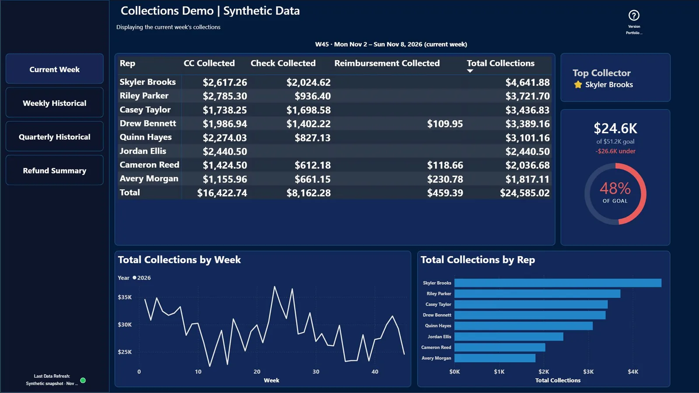
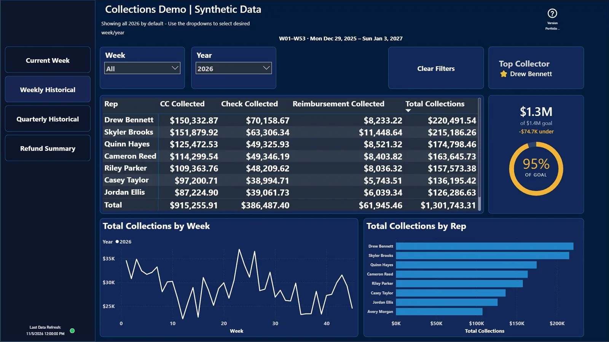

Collections Tracker
Are we on pace for this week's collections goal, and who's driving it?
A collections team tracked weekly results against a goal in a spreadsheet. This dashboard replaced it with a live view of the current week, historical trends and a refund lookup.

What it shows
- Current Week: collections by rep, split by payment type, with the team total against the weekly goal.
- Goal ring: percent of goal reached and the dollar gap, with a "Top Collector" callout.
- Weekly and Quarterly Historical: pick any week or quarter to see totals, goal attainment and rep rankings.
- Refund Summary: a simple weekly refund lookup that preserves the workflow from the old spreadsheet.
How it's built
- SVG goal ring as a DAX measure: the ring is drawn by a measure that returns an SVG image, so it responds to filters like any other visual.
- ISO week calendar: weeks and quarters follow ISO definitions to match how the team reports.
- Model: payments, goals and calendar tables, with about 30 measures for totals, attainment and rankings.
- Navigation: button-driven pages and a "Clear Filters" action for non-technical users.
